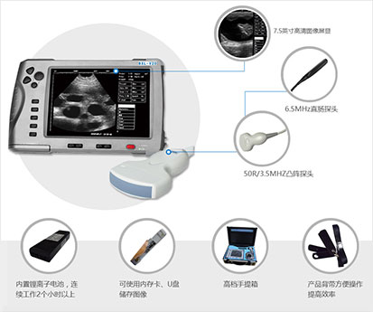

造成兽用B超机不显示图像的原因
来源：未知|发布时间：2017-09-08 09:06

兽用B超机在使用的过程中最主要就是图像的清晰度的问题，如果说兽用B超突然不显示图像了，就应该分析原因。任何仪器都可能出现故障，认真分析原因就关键。兽用B超在使用过程中可能会出现屏幕上没有图像的情况，这时需要及时排除是何原因造成的故障。
首先：打开兽用B超机器外壳，发现其内有很多灰尘，将灰尘清理干净后再开机。其次：右屏幕依旧没有图像就在出现故障时把各路输出电压都测量一遍，未发现问题。最后：关机拔出机子内的板卡，用目视法检查，发现兽用B超系统中CPU板上有一个角落的一部分被腐蚀。经仔细查看，此处旁边有电池出现漏液情况。测量电池的电压，3.58V与标称上的3.6V基本一致，估计此电池还能继续使用。
注意事项：在以上情况下不能随便更换电池，因为一般电池在给某些特定的芯片供电以便保存时间和一些设置信息，如果贸然取下可能会导致兽用B超程序丢失而出现新的故障。将被腐蚀的兽用B超系统中的部分电路清理干净后再开机，故障仍未解决。再次取下CPU板，仔细观察是否还有未清理干净的部分，无意间感到电池附近有一个芯片很烫手。
观察发现此芯片是用来储存程序的，其附近还有几个同样的芯片，但是没有那么热。用酒精将此芯片冷却后再开机，发现只有这个芯片会慢慢发热，当热到一定程度时机器就报错误。当芯片散热后可以正常工作，由此可断定此芯片未完全损坏（还能读出程序）。更换相同型号的芯片，将坏的芯片的程序读出后再写入新的芯片内更换到兽用B超系统中的CPU板上，装机，检查此兽用B超无误后再开机，未再出现此故障，故障排除。